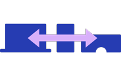

<mat-sidenav-container class="sidenav-container" autosize>
  <mat-sidenav #sidenav class="sidenav" fixedInViewport
      [attr.role]="(isHandset$ | async) ? 'dialog' : 'navigation'"
      [mode]="(isHandset$ | async) ? 'over' : 'side'"
      [opened]="(isHandset$ | async) === false">

          <mat-toolbar>

            <mat-icon aria-hidden="false" aria-label="PhaseHomeIcon">home</mat-icon>
          <a mat-raised-button href='http://phasematrixmedia.online' target="_blank" rel="noopener noreferrer">PhaseMatrix</a>

          </mat-toolbar>
          <button mat-flat-button [matMenuTriggerFor]="menu">Virtual Reality</button>
          <mat-menu #menu="matMenu">

          <a mat-flat-button  href="http://github.com/PMatrixMedia/vrdashboard" target="_blank" rel="noopener noreferrer">vrdashboard</a>
          <button mat-menu-item>VRTK</button>
        </mat-menu>
          <mat-nav-list>
      <a mat-list-item href="#">Augment Reality</a>
    </mat-nav-list>
  </mat-sidenav>
  <mat-sidenav-content>
    <mat-toolbar color="primary">
      <button
        type="button"
        aria-label="Toggle sidenav"
        mat-icon-button
        *ngIf="isHandset$ | async">
        <mat-icon aria-label="Side nav toggle icon">menu</mat-icon>
      </button>
      <a mat-raised-button color="warn" routerLink="/"(click)="sidenav.toggle()">
      <span>PhaseVR</span>
      </a>
    </mat-toolbar>
    <div style="text-align:center">
      
      <h1>
        Welcome to My VR/AR Site!
      </h1>
    </div>
    <div style="text-align:left">
      
      <h2 id="xhead">The code that I am working on here is Cross Platform and Uses React360 formally ReactVR</h2>
    </div>
    <div>
      <p>This site is a work in progress, so please be patient as I work to get things in working order.</p>
    </div>
    </mat-sidenav-content>
</mat-sidenav-container>
